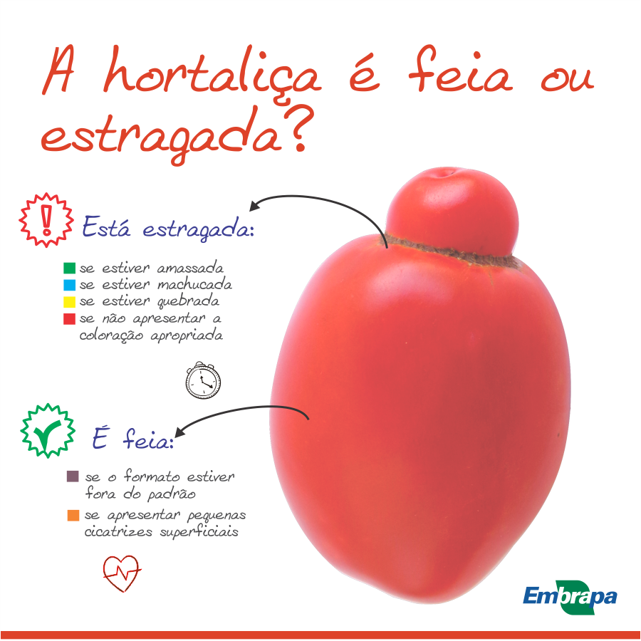

2
TEXTO I

Disponível em: htt ps://www.facebook.com/embrapa/photos/a.609357055926350/733391400189581/?type=1&theater. Acesso em: 27 maio 2020.
TEXTO II
Em alguns países da Europa, permite-se que um produto de menor valor estéti co seja comercializado.
Estamos falando de um pepino deformado ou de uma cebola pequena, mas não de um produto
contaminado com resíduos químicos ou agentes biológicos. No caso do Brasil, o problema vai além da
aparência, porque há hortaliças ruins – contaminadas, murchas, machucadas – que chegam às bancas
para ser comercializadas.
Mas, se nos dois contextos há perda de alimentos e preconceito em relação às hortaliças fora do padrão
visual, mas boas para o consumo, quais seriam as alternati vas para evitar o desperdício e melhorar a
qualidade dos produtos? Para os pesquisadores do assunto, não adianta replicar a experiência europeia no
Brasil, de exigir hortaliças esteti camente perfeitas, porque também teríamos produtos sendo desprezados
ainda na etapa de produção. Não devemos passar de um mercado pouco exigente, que gera desperdício
no varejo e nas residências, para um mercado exigente que gera perda no campo.
A solução do problema é conscienti zar os diversos elos da cadeia produti va, especialmente varejistas
e consumidores, para que sejam esclarecidos sobre quais aspectos da aparência das hortaliças
comprometem a qualidade. Quanto maior a exigência do mercado por hortaliças de aparência perfeita,
maior o desperdício de alimentos. Por sua vez, quanto maior a exigência por hortaliças sem danos,
causados pela falta de cuidado e pela falta de higiene, menor será a perda de alimentos e maior a
qualidade da alimentação da população brasileira.
Disponível em: htt ps://www.embrapa.br/busca-de-noti cias/-/noti cia/29626389/manuseio-correto-preserva-a-qualidade-e -a-vida-uti l-das-hortalicas. Acesso em: 27 maio 2020 (adaptado).
Considerando as informações apresentadas nos textos, avalie as asserções a seguir e a relação proposta
entre elas.
I. O texto I sintetiza uma informação principal do texto II, ao apresentar critérios disti nti vos de
alterações visuais que têm efeitos puramente estéti cos em produtos alimentí cios daquelas que
têm implicações na qualidade desses produtos.
PORQUE
II. O texto II divulga que o aumento das perdas na cadeia produti va de hortaliças no Brasil
é proporcional à elevação de exigências dos consumidores pela aparência de produtos
agropecuários.
A respeito dessas asserções, assinale a opção correta.